gitGraph commit id: "clean data" commit id: "main model" branch robustness commit id: "try fixed effects" commit id: "add controls" checkout main commit id: "fix typo" merge robustness commit id: "submit paper"
Digital skills for PhDs
Command line & code versioning for research @CREST
Émilien Schultz
2026-11-12
Foreword
Who am I
- Émilien Schultz
- Data scientist / research facilitator at CREST
- emilien.schultz@ensae.fr
And you ?
- Discipline (economics, sociology, statistics…)
- What do you use ? (R, Python, Stata, Excel…)
- Have you ever opened a terminal ? Used Git ?
Why this afternoon ?
Research in economics, sociology and statistics is now computational
- Your results depend on code, data and software
- Journals ask for replication packages (data editors re-run your code)
- You will work with co-authors, on several computers, sometimes on servers
- In 3 years, someone will ask you how Table 2 was produced
- that someone is usually you
Digital skills are part of the scientific method, not an IT detail
General goals
- Give you the big picture : what are these tools, why do they exist
- Understand a few concepts that will not change
- Practice a little, to break the ice
- Know where to look when you need more
- Discuss what you need in the future
What it is not
A complete training. You will forget the commands. Keep the concepts.
Program
- The command line : talking to a computer with text
- Git & GitHub keeping track of your work, sharing and collaborating
- Discussion on Latex & Quarto (if needed)
The common thread : your research project
One project (a paper, a thesis chapter) is :
- data (survey, administrative data, scraped data, interviews…)
- code (cleaning, models, figures)
- text (the paper)
- the compute to run (software, packages, versions)
Today : how to organize it, keep its history, and share it
Part 1 - The command line
Two philosophies organizing interaction with digital devices
- GUI = Graphical User Interface
- mouse + everything visible
- you can only do what the buttons allow
- CLI = Command-Line Interface
- keyboard (text-based) + everything hidden
- small tools that can be combined
- Other interfaces, vocal …
What is the command line interface ?
A command-line interface (CLI) is a means of interacting with a computer program by inputting lines of text called command-lines
- In the past, the only way to use a computer
- Today, the common language of
- servers and computing clusters
- programming tools (R, Python, Git, Quarto, LaTeX…)
- and now AI coding assistants
small, simple programs with clean interfaces can be combined to build larger systems
Why should a social scientist care ?
- Reproducibility : a command can be written down, a click cannot
- Access : secure data servers, computing clusters, cloud platforms have no mouse
- Autonomy : install tools, understand error messages, follow tutorials on new methods using it
- To impress your friends & family
Still important for research in the 21st century
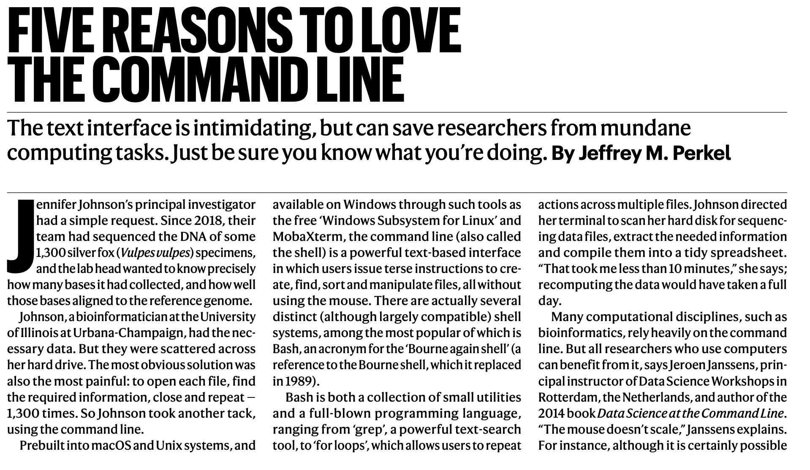
Especially because Linux is everywhere in research
- All the TOP500 supercomputers run Linux
- So do the servers you will use
- Onyxia / SSPCloud, lab clusters, Jean Zay (GENCI)
- macOS is a cousin (Unix) ; Windows has WSL
- Free and open : nobody owns it
Learning the CLI = learning how to talk to all these machines
Is it worth it ?
- Remote servers
- Simplify some automation
- Low tech
- Agentic tools use it - at least to understand
It looks complicated
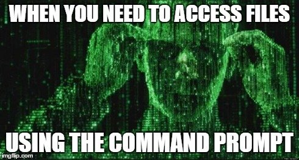
But you only need a small vocabulary, and a few concepts
You don’t have to master all of it
- You will use only a few commands
- You can search / ask an AI assistant
- You can try several times : it is a dialogue
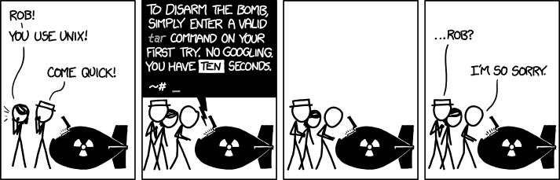
Before the CLI, the computer
The mouse hides these three dimensions. The command line shows them.
| What it is | Questions you ask | |
|---|---|---|
| 💾 Storage | files and directories, on a disk | where is my data ? how big ? Who can access it |
| 🛠️ Tools | programs : ls, git, R, Python, Stata |
which one ?which version ? How to install new ones ? |
| ⚙️ Processes | programs that are running, using CPU and memory | what is running ? is it finished ? |
A script is stored as a file, executed by a tool, and becomes a process
(Yes, we can add transfert/network as another dimension)
Concept 1 : the shell
- The terminal is the window ; the shell is the program that reads your commands
- Different flavours : Bash1, Zsh (same philosophy)
- A loop : you type a command → it runs → it prints a result → you type again
- Available everywhere
- Mac / Linux : the Terminal application
- Windows : WSL or Git Bash
- Inside RStudio, VS Code, Jupyter
Concept 2 : the structure of a command
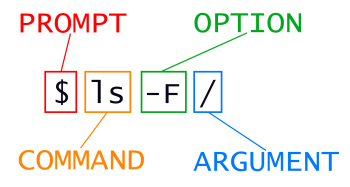
- a name for a tool (for instance
ls) - options with flags (
-l/--all) that change the behaviour - arguments : on what it applies (often files)
Getting help
man ls (quit with q), ls --help, or explainshell.com
Concept 3 : the file system is a tree 🌲
- Everything is a file or a directory (folder)
- It starts from a root :
/(on WindowsC:\) - A path is the address of a file
- Absolute path : from the root
/home/emilien/thesis/data/survey.csv- changes from one computer to another
- Relative path : from where you are
data/survey.csv- works on your co-author’s computer
- Absolute path : from the root
A classic replication failure
read.csv("C:/Users/Jean/Desktop/thesis/data.csv") runs on one computer in the world
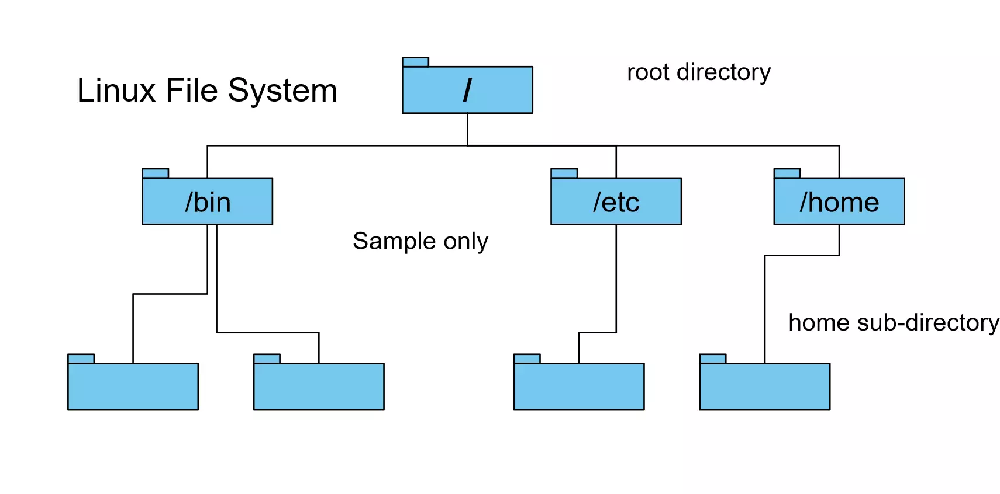
Concept 4 : you are always somewhere
Every program runs from a working directory
pwd: where am I ?ls: what is here ?cd: go somewhere else
Shortcuts
.here,..the parent folder,~your homeTabto complete names,↑for previous commandsCtrl+Cto stop a command,Ctrl+Rto search your history
A small vocabulary
| Command | What it does |
|---|---|
mkdir |
create a folder (-p for nested ones) |
touch |
create an empty file |
cp / mv |
copy / move or rename |
rm |
remove (-r for a folder) |
cat / less |
display a file / page through it |
head / tail |
first / last lines of a file |
There is no trash
rm deletes for good. No undo. Read twice before pressing Enter.
How to get a terminal
- On your computer
- Or on Onyxia (a terminal in your browser) :
- INSEE : https://www.sspcloud.fr/
- GENES : https://onyxia.lab.groupe-genes.fr/
Let’s use it
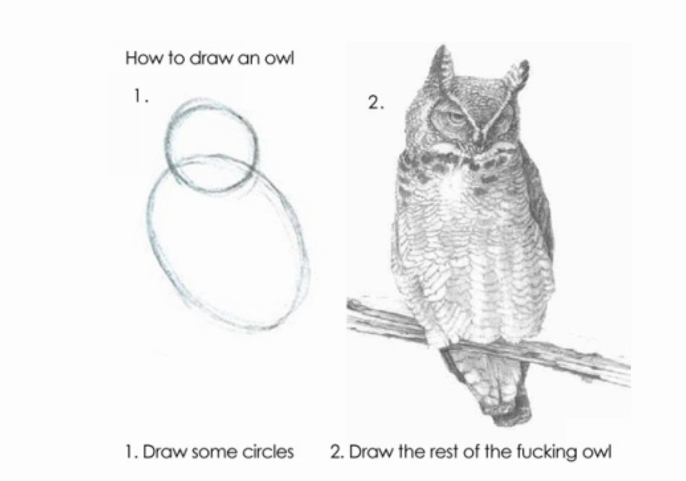
Practice 1 : build a project skeleton
Where are you ? What is around ?
Find your current directory and list its content, including hidden files and file sizes
Create this structure and go inside
phddigitalskills/
├── README.md
├── data
│ ├── processed
│ └── raw
└── scriptsCheck
Go to data/raw, then come back to phddigitalskills using a relative path
Practice 1 : a solution
Why this structure ?
Raw data is never modified. Everything in processed can be rebuilt from raw + scripts. This is the base of a replication package.
Concept 5 : small tools, combined
Each tool does one thing ; the pipe | sends the output of one to the input of the next
And the result can be written to a file
>write (and overwrite)>>append
Tools to look at data
| Command | What it does |
|---|---|
wc -l |
count lines |
grep |
keep the lines containing a pattern |
cut |
keep some columns |
sort |
sort lines |
uniq -c |
count repeated lines |
curl / wget |
download a file |
A 10 Gb file will not open in Excel. head takes one millisecond.
Practice 2 : explore a dataset without opening it
Answer with commands only
- What are the columns ? How many rows ?
- How many rows for each continent ? (
cut -f 2keeps the second column) - Create
data/processed/france.tsvwith only the lines about France (and the header)
Practice 2 : a solution
What did we just do ?
A data pipeline : raw data → transformation → processed data, with a written trace
Editing a file in the terminal : vim
On a server there is no window : you edit files in the terminal. nano is the simple one (shortcuts are written at the bottom), vim is the one installed everywhere.
Vim has modes : the keyboard does not do the same thing in each
| Mode | To get there | What the keys do |
|---|---|---|
| Normal (at start) | Esc |
move and give commands |
| Insert | i |
type text, as in any editor |
| Command | : |
save, quit, search |
vim FILE to open (or create) → i to write → Esc → :wq to save and quit
:wsave,:qquit,:q!quit without saving,uundo,dddelete a line,/wordsearch
Lost ?
Press Esc, then type :q!. You will meet vim without asking for it : git commit without -m opens it.
From commands to scripts
Put the commands in a file : you get a script, the memory of what you did
The same logic applies to Rscript clean.R, python model.py, stata -b do main.do, quarto render paper.qmd
One command to rebuild everything = a reproducible paper
Concept 6 : processes, programs that run
A process is a program being executed : it uses CPU and memory (RAM), it starts and it ends. Storage persists, a process does not.
| Command | What it does |
|---|---|
top (or htop) |
live view of processes, CPU and memory (quit with q) |
ps aux |
list the processes |
Ctrl+C |
stop the process running in your terminal |
kill PID |
stop a process by its number |
In your research
“My laptop freezes when I load the data” : the file (storage) does not fit in the memory of R (process). “Is my estimation still running ?” : top
Concept 7 : environment variables, the context of a process
Each process starts with a set of named values : its environment
command not foundalmost always means : the tool is not in a folder listed in$PATH- Two versions of R or Python on the same computer ?
$PATHdecides - To make a variable permanent : add the
exportline to~/.bashrcor~/.zshrc
Good practice
Passwords and API keys belong in environment variables, not in your scripts : Sys.getenv("API_KEY"), os.environ["API_KEY"]
Programs are installed with commands too
- Each system has a package manager
- Debian/Ubuntu :
apt; macOS :brew; Windows :winget
- Debian/Ubuntu :
- So do languages :
pip/uv(Python),install.packages()(R)
sudo = do it as administrator
sudo
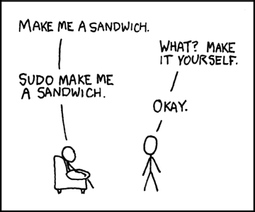
Working on a remote computer
Secure data, big models, long computations : the computer is elsewhere
- Same commands, another machine
- On a cluster, you do not run, you submit a job (
sbatch job.sh)
The CLI in the age of AI
- Assistants are very good at writing commands
- “how do I count the lines of all csv files in a folder ?”
- Coding agents now work in the terminal and run commands for you
So the skill changes : less writing, more reading
- Understand what a command will do before you run it
- Especially with
rm,sudo, and anything touching your data
Part 2 - Keeping track of your work with Git
Does this look familiar ?
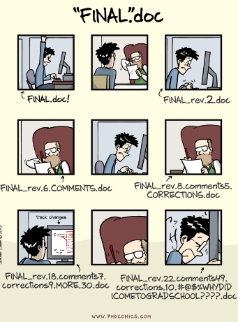
The problem
A research project lasts for years, and changes all the time
- Which version of the code produced the figures of the submitted paper ?
- What did I change since the results “worked” ?
- My co-author modified the same file as me
- The referee asks for a robustness check on the 2023 specification
Version control : a systematic way to record the history of a project
Three ways to manage versions
- Option 1 : copies of the file, sent by email
analysis_v3_final_NC_comments.do
- Option 2 : one shared document in the cloud (Dropbox, Overleaf, Google Docs)
- fine for text, but no clear versions, and code breaks when two people edit it
- Option 3 : each change is recorded, with an author, a date and an explanation ; everyone has the full history
Option 3 is Git
Where does it come from ?
- Version control tools exist since the 1980s (RCS, CVS, Subversion)
- Git was created in 2005 by Linus Torvalds to develop Linux
- thousands of contributors, no central organisation
- the question : how to collaborate efficiently at scale ?
- For sociologists : Alcaras, Industrial public goods, Sociologie du travail, 2020
Research borrows its tools from the open source community
Git has a reputation

What is Git exactly ?
Git is a command line tool that
- records snapshots of a folder
- lets you compare, go back, and explore alternatives
- synchronizes copies of the project between computers
It works on any text file : R, Python, Stata, LaTeX, Markdown, Quarto
Also available through buttons : VS Code, RStudio, GitHub Desktop
Concept 1 : the repository
- A repository (repo) = a project folder + its whole history
- The history lives in a hidden
.gitfolder - One project = one repository
- one paper, one thesis chapter, one package
Concept 2 : the commit
A commit is a snapshot of the project at a given time, with
- an author and a date
- a message : why this change
- a unique identifier (
a3f9c2e) - a link to the previous commit
The history is a chain of commits : the lab notebook of your project
Concept 3 : you choose what goes in a snapshot
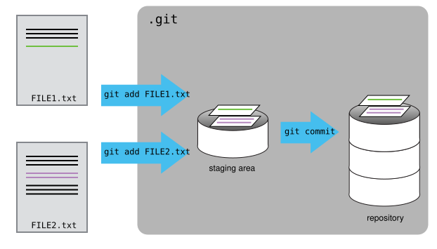
Working directory → staging area (git add) → history (git commit)
The basic cycle
Once, on each computer :
The message matters
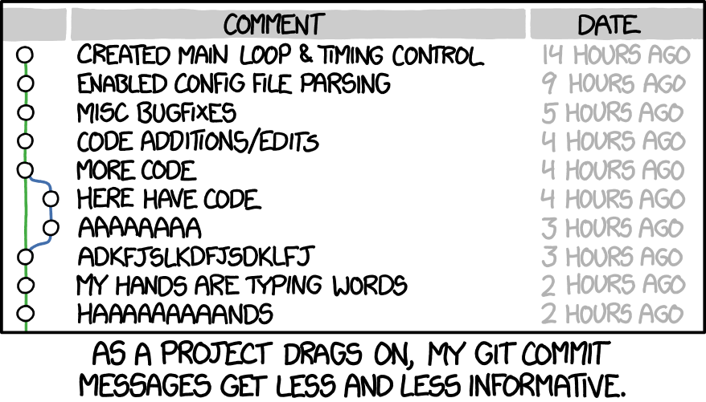
Write for your future self : “Cluster standard errors at the region level”
Looking at the past, coming back
- What changed ?
git diff: since the last commitgit diff a3f9c2e scripts/clean.R: since a given commit
- Oops
git restore FILE: discard my current changes on a filegit revert a3f9c2e: cancel a commit with a new commitgit switch --detach a3f9c2e: visit the past (git switch -to come back)
Warning
git restore and git reset --hard throw away uncommitted work. What is committed is (almost) never lost.
What should not be tracked
Git is made for code and text, not for everything
- Data (large, and often confidential : survey microdata, CASD, interviews)
- Outputs that can be rebuilt (figures, PDF, logs)
- Passwords, API keys, tokens
List them in a .gitignore file
data/
*.pdf
.env
.DS_StoreImportant
What has been committed stays in the history. Think before the first commit, not after.
And the data then ?
- Small public data : can live in the repo
- Otherwise : document where it comes from and how to get it (README)
- Archive it properly : Zenodo, data.gouv.fr, Progedo / Quetelet, Harvard Dataverse
- Restricted data : the code is shared, the access procedure is described
Code in Git, data in a repository made for data
And notebooks ?
Jupyter notebooks (.ipynb) are widely used… and difficult to version
- A notebook mixes code, text and outputs (tables, images) in one big JSON file
- Run it again without changing anything : the file changes
git diffbecomes unreadable, conflicts are painful- Outputs can leak data you are not allowed to share
What to do
- Clear the outputs before committing (or automate it with nbstripout)
- Prefer text formats : Quarto
.qmd, R Markdown, or Jupytext to pair a notebook with a.pyfile - Notebooks to explore, scripts for what goes in the paper
Practice 3 : your first repository
In the phddigitalskills folder
Start tracking
- Initialize a repository
- Create a
.gitignorethat excludesdata/ - Write two lines in
README.md - Commit (
README.md,.gitignore,scripts/)
Make history
- Modify the README, look at the difference, commit again
- Display the history
- Modify the README again, then change your mind and discard the change
Practice 3 : a solution
git init
echo "data/" > .gitignore
echo "# PhD digital skills" > README.md
git status
git add README.md .gitignore scripts
git commit -m "Start the project"
echo "Gapminder exploration" >> README.md
git diff
git add README.md
git commit -m "Describe the project"
git log --oneline
echo "oops" >> README.md
git restore README.mdDemo : the same thing with buttons (VS Code)
Git is the same underneath, the interface changes
- Source Control panel : modified files =
git status - Click on a file : side-by-side differences =
git diff +next to a file =git add- Message + Commit =
git commit - Branch name at the bottom left =
git switch - Sync =
git pull+git push - Conflicts : accept current / incoming / both
Same in RStudio (Git tab) and GitHub Desktop. Use what you like : the concepts are the same
Concept 4 : branches, parallel versions
A branch is an independent line of commits
- Try an idea without breaking what works (
main) - If it works : merge it. If not : delete it.
Using branches
And merge one branch to another one !
Branches are cheap, use them : a referee request, a new specification, a risky refactoring
And if there are conflicts ?
Two branches changed the same lines : Git asks you to decide
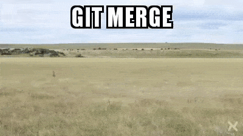
<<<<<<< HEAD
model <- lm(y ~ x + age)
=======
model <- lm(y ~ x + age + education)
>>>>>>> robustness- Edit the file to keep what you want, remove the markers
git addthe file, thengit commit
A conflict is not an error : it is a scientific question Git cannot answer for you
Practice 4 : branch and conflict
A parallel version
- Create a branch
ideaand switch to it - Change the first line of
README.md, commit - Go back to
main: look at the README. What happened ?
Create a conflict (on purpose)
- On
main, change the same first line differently, commit - Merge
ideaintomain - Solve the conflict, commit, delete the branch
Practice 4 : a solution
git switch -c idea
# edit the first line of README.md
git commit -am "Rename the project"
git switch main
cat README.md
# edit the first line of README.md differently
git commit -am "Another title"
git merge idea
# CONFLICT : open README.md, choose, remove the markers
git add README.md
git commit -m "Merge idea"
git branch -d idea
git log --oneline --graphPart 3 - Sharing and collaborating with GitHub
Git is not GitHub
- Git : the tool, on your computer
- GitHub : a website that hosts Git repositories + services around them
- a startup launched in 2008, bought by Microsoft in 2018
- A remote copy of your repository
- A system of access rights (private / public, collaborators)
- Tools to discuss the code
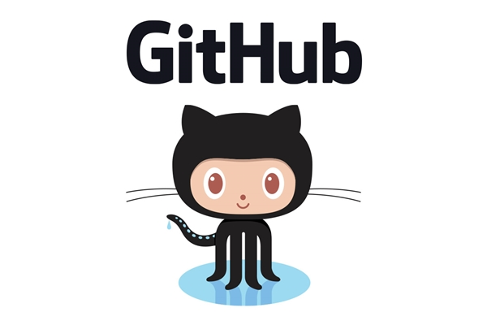
GitHub is not alone
Platforms hosting Git repositories (“forges”)
- GitLab : open source, can be self-hosted
- many institutions have their own instance
- Codeberg : non-profit, community-run
- Bitbucket
Same concepts everywhere. The skills transfer.
Why use it for research ?
- Backup : the history is not only on your laptop
- Several computers : laptop, office, server
- Collaboration : co-authors, supervisor, research assistants
- Transparency : the code of the paper is available, with its history
- Visibility : your work can be found, reused, cited
More and more expected : replication packages, data editors, open science policies
Research relies on shared code
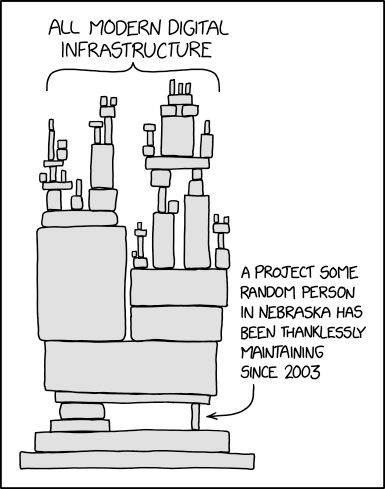
Concept 1 : remote, push, pull
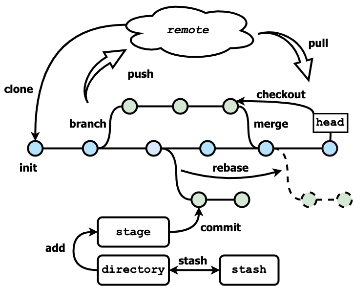
git clone URL: get a copy of a remote repositorygit push: send my commits ;git pull: get the others’ commits
The daily routine
Pull before you start, push when you stop
Authentication
GitHub needs to know it is you (passwords are not accepted for Git)
- Easiest : GitHub Desktop, VS Code, or the GitHub CLI :
gh auth login - Classic : an SSH key
- On a server / Onyxia : a personal access token
Warning
A token is a password. Never write it in a file of the repository.
Concept 2 : issues, the memory of the project
An issue = a discussion attached to the repository
- a bug, a question, an idea, a to-do
- “Referee 2 asks for clustered standard errors”
- closed when it is solved, and linked to the commits that solved it
For a paper : a shared, searchable to-do list, better than 200 emails
Concept 3 : the pull request
“I made changes on a branch, could you look before we merge ?”
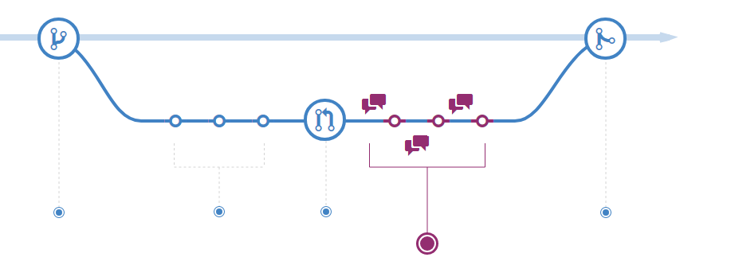
- Your co-author reads the changes, comments, asks for modifications
- Code review : the peer review of code, before publication rather than after
Fork : contributing without permission
A fork is your own copy, on GitHub, of someone else’s repository
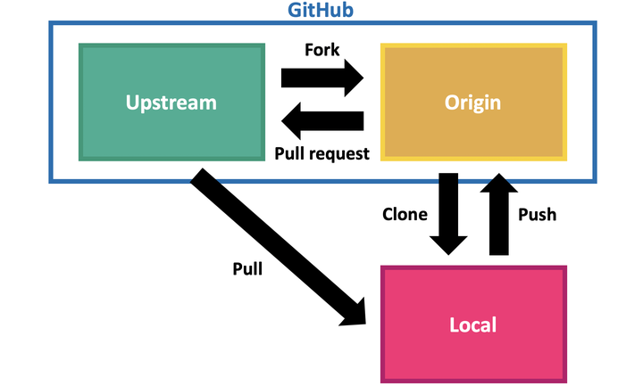
This is how you fix a bug in an R package or correct a typo in a course
Practice 5 : contribute to this course
Get in
- Create your GitHub account (if needed)
- Open an issue with your name on the course repository (= attendance)
Propose a change
- Fork the repository
- Edit a file (directly on GitHub with the ✏️ button, or clone it if you are comfortable)
- fix a typo, add a resource, add your name to
PARTICIPANTS.md
- fix a typo, add a resource, add your name to
- Open a pull request
Making your code a research output
A public repository is not yet a publication. Add :
- a README : what it is, how to run it, where the data comes from
- a LICENSE : what others are allowed to do (MIT, GPL, CC-BY…)
- a
CITATION.cfffile : how to cite it - the software environment, with versions (next slide)
- an archived release with a DOI (Zenodo ↔︎ GitHub, Software Heritage, HAL)
GitHub can disappear or change ; an archive with a DOI stays
Software environments
“It worked on my computer” : packages change, and the same script can fail, or give other numbers, two years later.
An environment = the tools of one project, with their exact versions, written in a file
| Isolate the project | The file to commit | |
|---|---|---|
| R | renv::init() then renv::snapshot() |
renv.lock |
| Python | python -m venv .venv + pip, or uv |
requirements.txt, uv.lock |
| Stata | version 18 in the do-file, ado files in the project |
the do-file |
- Commit the lock file with Git : code + data + environment = reproducible
- At least, write the versions in the README (
sessionInfo(),pip freeze) - Going further : containers (Docker), the whole computer in a file
What a replication package looks like
paper-wage-gap/
├── README.md <- how to reproduce every table and figure
├── LICENSE
├── data/
│ ├── raw/ <- never modified (or instructions to get it)
│ └── processed/
├── scripts/
│ ├── 01_clean.R
│ ├── 02_models.R
│ └── 03_figures.R
├── output/ <- tables and figures, rebuilt by the scripts
└── run_all.sh <- one command to rebuild everythingYou already know all the pieces
More services (for later)
- GitHub Pages : a free website (personal page, project documentation)
- Actions : run things automatically at each push (tests, rendering a paper)
- GitHub Education : free advanced features for students
- Overleaf can synchronize a LaTeX project with Git
Version control in the age of AI
- AI assistants write a lot of code, fast, and sometimes wrong
- Git is the safety net
- commit before letting an assistant modify your project
git diffto read what it changed- a branch for each experiment
- You remain responsible for the code of your paper
Final overview : where is my work ?
- On your computer : edit →
add→commit, as often as you want - With the others :
pullto receive,pushto send, pull request to propose git statustells you where you are
Conclusion : for your research
- Organize : one project, one folder, a clear structure, relative paths
- Track : commit your code and text, explain why
- Share : push, collaborate through issues and pull requests
- Publish : README, license, archive with a DOI
Start small : one project, alone, this week. We are here to help.
Resources
- The Unix Shell and Version control with Git - Software Carpentry
- The Turing Way : Guide for reproducible research
- Version control with git (for economists)
- Good practices for statistical projects with R & Git (INSEE)
- Happy Git and GitHub for the useR
- Pro Git (the reference book)
- Learn Git Branching (interactive)
- Gentzkow & Shapiro, Code and Data for the Social Sciences: A Practitioner’s Guide
- Perez-Riverol et al., Ten Simple Rules for Taking Advantage of Git and GitHub, PLOS Comp. Biol., 2016
Appendix : commands cheat sheet
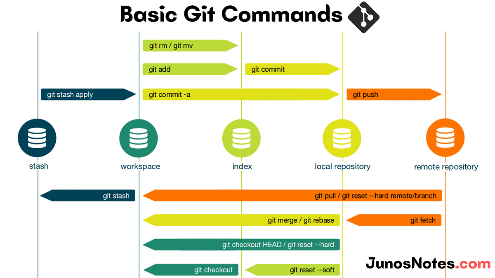